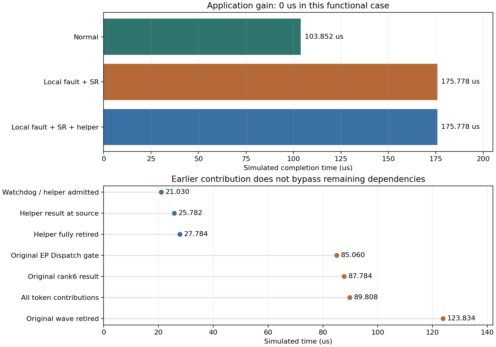

128端点Clos · 人工功能路由 · 同一GPU/NIC/网络资源 · 执行版本 a7b736ec76
备用贡献提前62.002微秒，
整项任务仍没有变快
已证明：备用输入、计算、归并、回传和ACK真实执行，共享原来的资源。尚未实现：备用贡献替代原图必要依赖、推动推理请求提前完成。不能把单项提前当作整体恢复收益。
这轮做了什么
- 在确认超时处加入同一ns-3时刻的同步决策回复，避免前端把恢复动作回填到过去。
- 普通计算和备用计算共用每GPU非抢占FIFO；备用消息通过原ServiceTransport、NIC和Clos传输。
- 将真实备用生命周期绑定到贡献的一次提交、迟到结果判重和全部资源退休；保存完整逐包记录与独立审核。
三组实际结果
| 条件 | 任务完成/us | 实际消息 | 逐包事件 | 计算任务 | 布局载荷/B |
|---|
| 正常 | 103.852 | 62 | 2120 | 2560 | 37696 |
| 局部故障 | 175.778 | 62 | 2126 | 2560 | 37696 |
| 相同故障＋一次备用 | 175.778 | 64 | 2150 | 2562 | 38912 |
三组原图均3708节点、62消息、2560计算任务，四份独立人工路由、31个数据活跃rank。局部故障仅在[0,20us)丢弃发往GPU6的DATA，实际丢1包，控制包保留；已有选择性重传SR和参考DCQCN保持开启。两组EP64完整副本均已声明，三组均声明相同108条持久流，不临时增加GPU或独立网络。

图中SR表示选择性重传；时间为仿真时钟，不是宿主运行时间。布局载荷不含协议头和ACK，逐包事件数包含逐跳发送接收，不能当作源端包数。
为什么先返回也没用
示例token需要原rank6的专家12—15，也需要rank8的专家16—19。0→6的原Dispatch丢包后，前端于21.030us收到超时并请求rank7执行同一专家集合。备用输入23.058us到达，专家计算400ns、归并300ns，结果25.782us回到源端；原rank6结果87.784us才回到源端，单包贡献提前62.002us。
可是rank8虽然5.100us就收到输入，专家计算仍须等整个EP组Dispatch门限85.060us释放。rank8的结果89.808us才返回。所以同一token全部专家到齐时间仍为89.808us，原首轮图123.834us退休，完整两层两步服务175.778us结束。原消息继续真正确认，迟到的rank6结果被记为冗余，没有伪造ACK或跳过原连接。
当前实测任务收益0%，新增1216B布局载荷（640B输入＋576B回传，约为原37696B的3.23%），新增700ns声明计算。健康组本例未观察到完成时间恶化；不能推广为繁忙集群下备用无干扰。
发现与下一步
只增加重传、超时或备用请求还不够。下一步应检查通信接口能否允许已具备完整输入的贡献独立计算，并让真实结果到达驱动token级归并，同时把原传输排空放到后台。这需要明确执行语义和实际资源成本，不能简单删除现有EP门限或伪造原任务完成。若实际通信库必须等待整个调用完成，就应把优化放在调用内部，或承认该部署下备用策略没有收益。
当前尚无经过验证的新恢复算法或真实R1收益。功能用例通过后仍须使用真实专家路由、合理故障范围和同副本预算的成熟备用基线，再测SLO、尾延迟、额外带宽/计算及健康任务影响；不为追求正收益削弱基线或制造任意热点。
验证与边界
83项单元检查通过，含9项新检查；无网络CPU检查独立验证6任务FIFO时序和3类非法输入。三个新128端点Clos条件各运行一次，完整记录和公开rdma-check均通过。6类记录篡改、5类原生非法声明被拒绝；迁移后检查通过。没有依赖重编、升级、下载或真实GPU执行。
与旧非共享队列结果离线比较：两组完成时间不变。新正常条件的同纳秒事件顺序改变，两条ACK回调和三个节点时刻最大差1ns；不能声称旧新原件逐字节一致。局部故障原包、消息和节点时刻一致，原始事件序列顺序仍有差异。当前故障对照与备用条件使用相同共享队列，其原执行事件逐字节一致。
首次CPU回归发现旧输入缺service字段，已修复；首次离线审核错误要求新旧包完全相同，已保留失败并改为明确报告真实差异。两次均未重跑网络。功能例不是完整DeepSeek-R1，没有激活/权重数值验证，H100标签和声明成本没有硬件校准。
独立核验 · 源码、命令与监控 · 资源汇总 · 最终核查 · 接口文档 · 公开复现示例